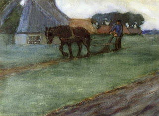

Bava Batra 36 - Does Plowing Establish Presumptive Ownership (Chazakah)?

When one plows somebody else's field, and the other one does not protest, is this indicative of the presumptive ownership of the one who plows?
Some say "yes," because a man would not see another plow his land and remain silent. Some say "no," because the owner may be saying to himself that the more the occupant plows, the softer the soil becomes and the better crop he, the owner, will be able to produce from the fields when he returns to it.
Rav Ashi said, "I asked all the great scholars of the generation, and they said to me that plowing establishes chazakah." Rav Nachman bar Yitzhak answered, "Is it proper to rule based on a poll? There are others who don't think this way." And the final decision is that plowing does not establish chazakah.